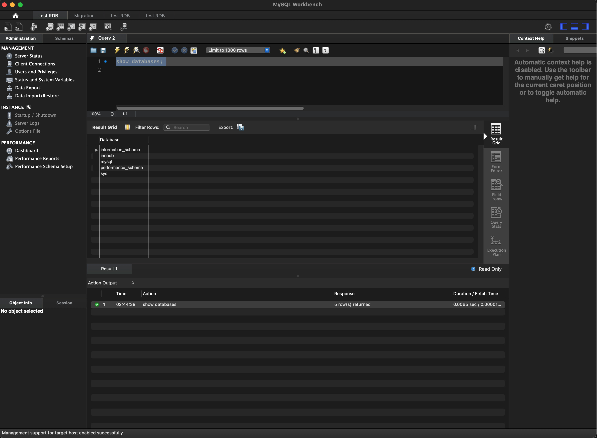
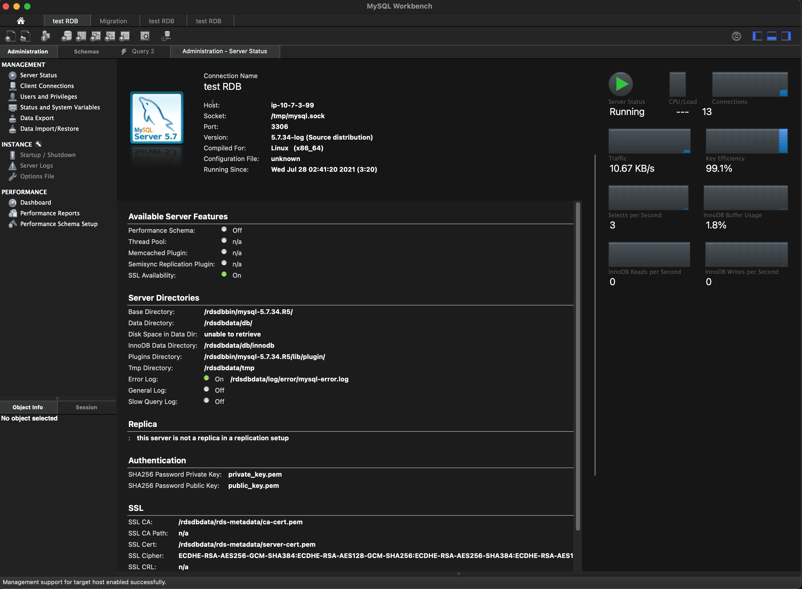

データベースとSQLの概要¶
データベースとSQLに関する基本的な知識を学習します。
データベースの基礎¶
データベースは関連したデータの形式を揃えて収集・整理して、検索などの操作やデータ管理を実行するシステムです。この機能を実現したシステムをDBMS（データベースマネージメントシステム）といいます。
- 追加(Create): データを整理して保存
- 参照(Read): 必要なデータを参照・抽出
- 更新(Update): データの変化に応じて好きな時に更新したい
- 削除(Delete): 必要ないデータを削除したい
データベースとストレージ¶
- ストレージ: データを永続的に記憶する装置（データーベースを構成する一つの要素となります）
- データーベース: ストレージ＋データを管理・操作するデータベースソフトウェア
データベースの役割¶
データベースはデータ操作を以上なく実行でき、データを安全に保護しつつ、保存・操作する仕組みを提供している。
データ操作にかかる様々な問題¶
- システムがクラッシュしたときにデータが消えないか？
- データを誤って削除してしまった場合に対処できないか？
- データ抽出に誤りが発生しないか？
- 2人が同時に同じデータにアクセスした際にどうするか？
- 大量のデータをうまく検索できないか？
データベースの役割を支える仕組み¶
- トランザクション:
データベースをある一貫した状態から別の一貫した状態へ変更する1つの処理の束のこと - データモデル:
実世界におかえるデータの集合を、DBMS上で利用可能な形に落とし込むためのモデル
トランザクション¶
データベースをある一貫した状態から別の一貫した状態へ変更する1つの処理の束のこと。
- 同時にアクセスした場合にうまく処理を行う
- データ処理に失敗したら、元に戻してくれる
- システムがクラッシュしてもデータを保護する
ACID¶
ACIDは信頼性のあるトランザクションシステムの持つべき性質のこと
- 原子性(Atomicity):
トランザクションが「全て実行されるか」か「一つも実行されない」のどちらかの状態になる性質 - 整合性(Consistency):
トランザクションの前後でデータの整合性が保たれ、矛盾のない状態が継続される性質 - 独立性(Isolation):
トランザクション実行中の処理過程が外部から隠蔽され、他の処理などに影響を与えない性質 - 耐久性(Durability):
トランザクションが完了したら、その結果は記録され、クラッシュしても失われることがないという性質
耐久性(Durability)¶
データを更新する際にCOMMITする更新が反映されるが、COMMITされないとデータがロールバックして保護する
例)
データを更新中にデータベースがクラッシュした場合、クラッシュのタイミングで以下のようなデータの保護を行う。
- COMMIT実施後に、データベースがクラッシュ:
更新したデータが保護される - COMMIT未実施でデータベースがクラッシュ: 更新前のデータにロールバックする
整合性(Consistency)¶
同時に複数人がアクセスした場合などにデータ整合性を維持する必要がある。
整合性モデル¶
- 結果整合性（弱い整合性）:
更新中に他の参照がある場合、参照を特に制限せずに更新前（コミット前）の古いテータを参照することで整合性を保つ - 強い整合性:
変更中に他の参照がある場合は、データの参照ができない状態で整合性を保つ
データモデル¶
データモデルはデータベースのデータの持ち方などの構造や処理を定めるデータの論理的な表現方法で、データモデルに応じたトランザクション機能を実現する必要がある。
データモデルの種類¶
- リレーショナルモデル
- グラフモデル
- キーバリューストア
- オブジェクト
- ドキュメント
- ワイドカラム
- 階層型
リレーショナルデーターベースの概要¶
- リレーショナルモデルが基本的なデータモデルとなっているデータベース
- テーブルが集合してデータベースとなる
- テーブル同士は、キーを共有してリレーション（関係）という単位でデータが構造化される
- テーブルは行と列によって表現され、行と列を指定しデータを特定する
- 行単位でデータを追加・更新などをするため、行指向データベースと呼ばれている
リレーショナルデータベースマネジメントシステムの仕組み¶
多くのリレーショナルデータベースマネジメントシステムは、以下の3つの要素で成り立っている
- テーブル構造
- データベースエンジン
- SQL
データベースエンジン¶
リレーショナルデーターベースがDBにデータを挿入、抽出、更新及び削除（CRUD）するために使用する基礎となるソフトウェア
データベースエンジンの種類¶
- Oracle Database
- SQL Server
- DB2
- MySQL
- MariaDB
- PostgreSQL
MySQLの概要¶
OraelやPostgreSQLと並んで世界で最も利用されているデータベース
- 世界中で多くの企業が使用しているデータベース管理システム
- オープンソースでNo1シェア
- オープンソースとして基本的に無料で利用できる
- Linux、Windows、MacOS などの複数のOS利用可能
- 現在は、オラクルが運営しており信頼性も高い
- 便利な管理ツールが充実（MySQL Workbench）
MySQL¶
| エディション | 説明 |
|---|---|
| コミュニティ版 | * 無料で利用可能なバージョン * 多くのオープンソース・ディベロッパーが参加する、巨大で活発なコミュニティによるサーポートを享受できる |
| 商用版 | 有料で利用する高性能バージョン MySQL Enterprise Editionは高度な機能、管理ツール、テクニカルサポートが包括的にまとまれれているため、最高レベルのMySQLスケーラビリティ、セキュリティ、信頼性、アップタイムを実現 |
MySQLを利用する理由¶
- 世界中に多くの企業が使用しているデータベース管理システムであり、オラクルが提供していることで信頼性が高い。
- ゆーざコミュニティや開発コミュニティが大きいため、情報やツールが充実している
- 結果サポートが充実
- マルチプラットフォームであり、さまざまな環境で利用可能である
- バージョンアップが容易である
ストレージエンジン¶
MySQLには、さまざまなタイプのストレージエンジンがあり、それらによって利用できるサポートやトランザクション処理などが異なってくる。
- MEMORY
- MRG_MYISAM
- CSV
- FEDERATED
- PERFORMANCE_SCHEMA
- MyISAM
- InnoDB
- BLACKHOLE
- ARCHIVE
ストレージエンジン:InnoDB¶
InnoDBエンジンは、MySQLに豊富なトランザクション機能を提供するストレージエンジン（AWSのRDSではInnoDBを利用する事になる）
MySQLのバージョン¶
| エディション | 説明 |
|---|---|
| 5.7 | * 最も長く利用されているバージョンであり、互換性があるツールや情報が豊富 * 今でも最も多くの企業が5.7を利用してデーターベースを構築している |
| 8.0 | * MySQL 5.7より最大2倍高速 * パフォーマンス、セキュリティ、生産性が大幅に向上し、次世代型のWebアプリケーション、モバイルアプリケーション、組込アプリケーション、クラウドアプリケーションの構築が可能 * 5.7との互換性が低い欠点がある |
SQLの概要¶
SQL（Structured Queary Language）はリレーショナルデータベースを操作するための言語
クエリ¶
SQLはクエリを実行する1つの言語であり、クエリとはデータベースについする命令文のこと
- 追加 (Create)): データを整理して保存したい
- 参照 (Read): 必要なデータを参照または抽出したい
- 更新 (Update): データの変化に応じて好きな時に更新したい
- 削除 (Dalete): 必要ないデータを削除したい
SQLのタイプ¶
以下3つのタイプに分かれる
| タイプ | 説明 |
|---|---|
| データ定義言語(DDL) | DDL: Data Definition Language データベースを定義するための言語 CREATEやDROPコマンドによってテーブルとリレーショナルシップを作成したり削除したりする |
| データ操作言語(DML) | DML: Data Manipulation Language データベースを操作するための言語 INSERTやDELETEコマンドによって目的や条件に応じてデータを抽出したり、更新したりするために利用する |
| データ制御言語(DCL) | DCL: Data Contol Language データを制御するための言語 GRANTやCOMMITコマンドによってトランザクションやシステム管理のための権限設定などに利用される |
DDL（Data Definition Language）¶
データベースやテーブルを作成したり、削除したりする。
コマンドの種類¶
- CREATE : 新しいテーブルやビューなどを作成
- ALTER : テーブルの構造を変更
- DROP : 既存のテーブルやビューを削除
- RENAME : テーブル名を変更
DML（Data Manipulation Language）¶
データベースにデータを追加・更新・削除したりする
コマンドの種類¶
- SELECT : テーブルやビューからの行の値を取得
- INSERT : テーブルに新しい行を挿入
- UPDARTE : テーブルの行や項目の値を更新
- DELETE : テーブルから行を削除
- MERGE : 行の挿入と更新を１ステートメントで行う
DCL（Data Contol Language）¶
権限を設定したり、トランザクションの制御を実施する
コマンドの種類¶
- BEGIN : トランザクションを開始
- END : トランザクションを終了
- COMMIT : トランザクションを確定
- ROLLBACK : トランザクション内のクエリを取りやめる
- GRANT : テーブル内の個々の列に対して権限を設定
- REVOKE : テーブル内の個々の列に対して権限を取り消す
SQLのメリット¶
最も利用されるデータベース操作言語であり、データ分析やそれに基づく経営課題への対応力を得るうえでも必須のノウハウ
- 見たい時に見たい範囲のデータを見ることが可能
- データの見え方を自由に加工できる
- データ範囲を自由に指定できる
- データから打ち手を検討することができる
- ビジネスデータを自分好みに応じてデータベースから抽出して、検証することができる
- 機械学習用のデータも抽出可能
RDSの概要¶
Amazon RDSはさまざまなデータベーソフトウェアに対応したフルマネージドなリレーショナルデータベース
以下のソフトウェアを利用したデータベースを構築できる
- MySQL
- ORACLE
- Microsoft SQL Server
- postgreSQL
- MariaDB
- Amazon Aurora
AWSのデータベース構築¶
AWSにおけるデータベース構築はEC2に自らインストールして構築する方法と、専用DBサービスを利用する方法の２通りあり。
| 構築方法 | メリット | デメリット |
|---|---|---|
| EC2インスタンス内にデータベースを構築 | 自由にDB構成や機能を利用 | 構築・運用が手間 |
| RDSなどのマネージド型サービスを利用して構築 | 構築・管理が楽 | AWS提供の範囲内での利用制限 |
RDSの制約事項¶
RDSはマネージド型で楽な反面、AWSから提供される機能範囲内での制限を受けます
主な制限¶
- バージョンが限定される
- キャパシティに上限がある
- OSへのログインができない
- フィイルシステムへのアクセスができない
- IPアドレスが固定できない
- 一部の機能が使えない
- 個別パッチは適用できない
RDSの特徴¶
- RDS自体がマネージド型の高可用なのに加えて、マルチAZによるMaster／Slave構成を容易に構築することができる。 AZ間で同期レプリケーションや、自動フェイルオーバーなどが可能です
- 参照専用のリードレプリカを最大5台（Auroraは15台）設置し、DBの読み取り処理をスケールアウトできる
- 自動・手動でスナップショットを取得して、保存管理し耐障害性を確保できる
スケーリング¶
マネージメントコンソールやAPIからスケールアップ可能
- インスタンスタイプを変更してスケールアップ／ダウンを実施
- コマンドライン（AWS CLI）やAPIからストレージを数クリックで容易にスケールアップ／ダウンをする
- 一時的にインスタンスタイプを大きくして、その後戻すことも可能
- ストレージサイズは、拡張ができるが縮小はできない
- データベースシャーディングを利用して、RDSの書き込み処理をスケーリングすることが可能
例）id: 1001~2000まではRDS1、id: 0~1000まではRDS2に書き込み
DBインスタンスの暗号化¶
保管時のインスタンスとスナップショットの暗号化が可能
暗号化対象¶
- DBインスタンス
- 自動バックアップ
- リードレプリカ
- スナップショット
暗号化方式¶
- AES-256暗号化
- AWS KMSによる鍵管理
- リードレプリカも同じ鍵を利用
- インスタンス作成時にのみ設定可能
- スナップショットのコピーの暗号化／リストア可能
MySQL Workbenchの概要¶
MySQL Workbenchは５つの機能領域を提供する
| 機能 | 説明 |
|---|---|
| SQLの開発 | データベースサーバーへの接続を作成及び管理ができます。接続パラメータを構成できるほか、組込のSQL Editorを使用してデータベース接続でSQLクエリーを実行することができます |
| データモデリング | Table Editorを使用して、データベーススキーマのモデルのグラフィカルな作成などデータベースの全ての特性の編集を行えます |
| サーバーの管理 | サーバインスタンスを作成及び管理できます |
| データ移行 | PostgreSQLなどからMySQLに移行できます。移行では、以前のバージョンのMySQLから最新へのリリースへの移行もサポートされます |
| エンタープライズサポート | MySQL Enterprise Backup 及び、MySQL Auditなどのエンタプライズ製品をサポートします |
トップ画面¶
左側のアイコンの説明¶
- SQLとサーバーの管理画面
- データモデリングの画面
- データ移行画面
SQLとサーバーの管理¶
- クエリー操作画面 
- サーバ情報表示画面 
データベースとスキーマの作成¶
データベース（またはスキーマ）を作成して、テーブルの集合としてのデータベースを定義する
- データベースの作成 : MySQLではテーブルやインデックスのまとまりをデータベースと呼ぶ
- スキーマの作成 : スキーマはMySQLではデータベースと同じ意味で利用する
テーブルとビュー¶
データの保存と参照に利用するのがテーブルとビュー
- テーブル : データを保存しておくための「表」にあたるデータ格納先
- ビュー : テーブルの得部分や複数テーブルを結合し、ユーザに必要な部分だけをあたかも一つのテーブルであるかのように見せる仮想的なテーブル
ファンクションとストアドプロシージャ一¶
一連のSQLクエリを関数のように記録して実行できるようにする設定機能として、ファンクションとストアドプロシージャがある
- ストアドプロシージャ :
DB上で実施する一連処理を事前に設定して、名前をつけて関数のように利用するプロセス設定
戻り値あり - ファンクション :
DB上で実施する一連処理を事前に設定して、名前をつけて関数のように利用するプロセス設定
実行のみで戻り値なし
データモデリング機能¶
Table Editorを利用して、ER図によるデータモデリング実施できる
データ移行¶
データ移行に関する各種機能を利用することができる